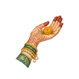
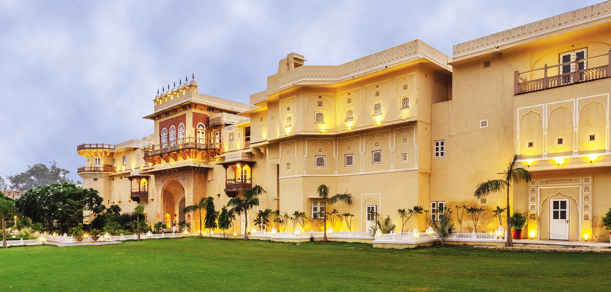
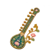
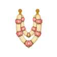
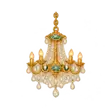

Mehendi Mela & Haldi
Chaar Baagh

Are getting married!
Chomu Palace, Jaipur
27–28 December 2026
Rajasthan, India
Explore the timeline
Chaar Baagh

Swaimaan Mahal
Mani Chowk

Mani Chowk

Manoharpole Garden
The essentials
Chomu Palace is outside central Jaipur; allow time for travel. Stay, transfer, and attire details will follow.
Tell us what service you’d like and when you need to be ready. The coordinator will confirm availability and pricing.
Request hair & makeupRequests open soon
Send a favourite song to the music team for the sangeet or reception.
Suggest a songRequests open soon
Illustrated guide · Map data © OpenStreetMap contributors